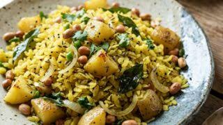

NORTH INDIAN • BREAKFAST
A light and flavorful Indian breakfast made with flattened rice, onions, vegetables and fresh coriander.

Rinse the flattened rice gently and keep it aside. Cook onion, potatoes, green chilli and peanuts until soft. Add the flattened rice and mix everything well. Cook for a few minutes and garnish with fresh coriander.
Rinse the flattened rice gently with water and allow it to soften for a few minutes.
Cook chopped onion, potatoes and green chilli until the vegetables become soft.
Add peanuts and cook them until they become lightly roasted and crunchy.
Add the softened poha and mix gently with the cooked vegetables and peanuts.
Cook for a few minutes and garnish with fresh coriander leaves. Serve warm.
Watch how to prepare delicious Poha.